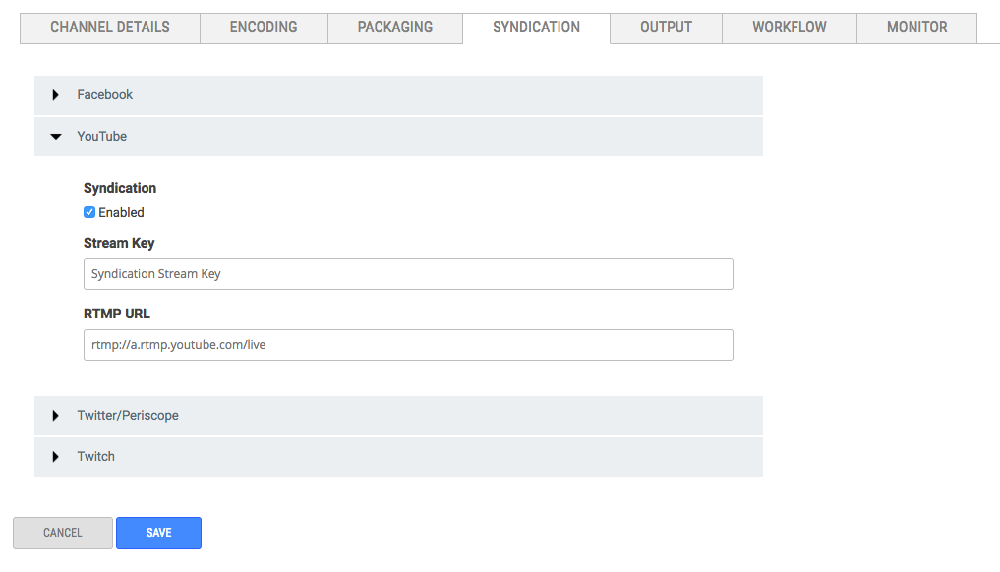

Syndicate live video to Youtube with just the stream key and RTMP URL for your account.
Before You Start
You need to know the Stream Key and RTMP
URL for the account you want to syndicate to.
Important: You must be a YouTube partner to be able to stream live video to your YouTube
account. Here is a link to the YouTube Partner Program Overview.
Here are
some considerations about Live Syndication: Important:
- Live Syndication only works with the Ooyala Package as the Packaging Partner and Ooyala Encode as the Encoding Partner.
- A channel must be stopped to enable syndication.
- Server Side Ad Insertion (SSAI) is not supported by Ooyala Live syndication to social media.
Find Your YouTube RTMP URL and Stream Key
- Log in to your YouTube account.
- Go to the "Creator Studio."
- Open the "Live Streaming" section in "Creator Studio."
- Find the "ENCODER SETUP" section.
- Copy and save the "Server URL" and the "Stream name/key."Note: The "Server URL" is the RTMP URL in Ooyala Live.
Configure YouTube Syndication

How to Syndicate to YouTube
-
To start the channel, click START in the upper left of
your browser.
Ooyala Live configures the channel for syndication to all enabled social media. This may take several minutes.